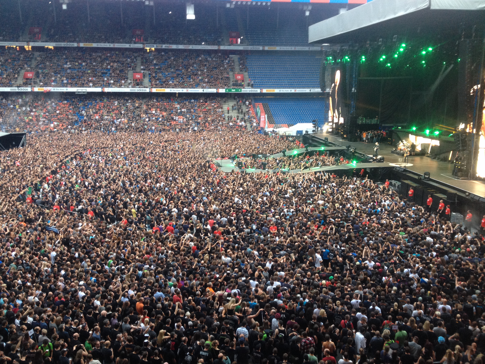
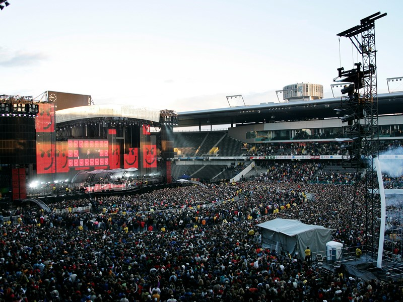

Sommerfest 2026
📍 Basel
📅 12. Juni 2026
🎟️ CHF 25.–
Das Sommerfest am Rhein bietet Open-Air-Stimmung mit mehreren Bühnen, Essensständen und einem großen Freizeitbereich für Familien und Freunde.

📍 Basel
📅 12. Juni 2026
🎟️ CHF 25.–
Das Sommerfest am Rhein bietet Open-Air-Stimmung mit mehreren Bühnen, Essensständen und einem großen Freizeitbereich für Familien und Freunde.

📍 Zürich
📅 20. Juni 2026
🎟️ CHF 40.–
Erleben Sie ein unvergessliches Open-Air Konzert mit einer riesigen Bühne, Stehplätzen und Live-Acts verschiedener Musikrichtungen unter freiem Himmel.

📍 Bern
📅 5. Juli 2026
🎟️ CHF 15.–
Urbanes Festival mit einer großen Auswahl an internationalen Food-Ständen, gemütlichen Sitzgelegenheiten und Unterhaltungsangeboten für alle Altersgruppen.

📍 Luzern
📅 18. Juni 2026
🎟️ CHF 30.–
Spannendes Sportevent mit verschiedenen Outdoor-Aktivitäten, Wettkämpfen und Mitmachaktionen für alle Altersgruppen.

📍 Winterthur
📅 2. Juli 2026
🎟️ CHF 20.–
Filmgenuss unter freiem Himmel mit gemütlichen Sitzgelegenheiten, Snacks und einer Auswahl an aktuellen Kinohits.

📍 Basel
📅 10. Juli 2026
🎟️ CHF 12.–
Zeitgenössische Kunstwerke lokaler und internationaler Künstler in einer inspirierenden Ausstellungshalle.

📍 Zürich
📅 22. August 2026
🎟️ CHF 35.–
Messe mit den neuesten Technologien, interaktiven Ständen und Präsentationen von innovativen Startups und etablierten Firmen.

📍 Aarau
📅 30. August 2026
🎟️ Kostenlos
Wochenmarkt mit regionalen Produkten, kulinarischen Spezialitäten und Unterhaltungsangeboten für die ganze Familie.

📍 St. Gallen
📅 5. September 2026
🎟️ CHF 28.–
Lustige Abendshow mit bekannten Comedians, Live-Auftritten und Interaktion mit dem Publikum in gemütlicher Atmosphäre.

📍 Bern
📅 12. September 2026
🎟️ CHF 45.–
Kreativer Workshop mit Malen, Basteln und DIY-Aktivitäten für Kinder, Jugendliche und Erwachsene.

Das Sommerfest 2026 erstreckt sich über ein großes Open-Air-Gelände direkt am Rhein. Besucher können auf mehreren Bühnen Live-Musik genießen, an verschiedenen Essensständen lokale und internationale Spezialitäten probieren und sich auf ein abwechslungsreiches Freizeitprogramm für Jung und Alt freuen. Zahlreiche Aktionen wie Workshops, Gewinnspiele und Mitmach-Aktionen sorgen für ein rundum gelungenes Event.
Das Open-Air Konzert auf der Seebühne Zürich bietet ein einzigartiges Musikerlebnis unter freiem Himmel. Internationale Künstler, moderne Bühnen- und Lichttechnik sowie kulinarische Angebote sorgen für einen unvergesslichen Abend.
Das Food Festival verwandelt die Innenstadt von Zürich in ein kulinarisches Paradies mit internationalen Spezialitäten, gemütlichen Sitzbereichen und Unterhaltungsangeboten für Kinder und Erwachsene.
Das Sportevent in Luzern bietet Wettkämpfe und Mitmachaktionen für Jung und Alt. Besucher können sich auf Outdoor-Sportarten, Teamspiele, Gewinnspiele und Fitness-Workshops freuen. Für Essen und Getränke ist gesorgt, außerdem gibt es spannende Wettbewerbe und Preise für alle Teilnehmer.
Das Open-Air Kino in Winterthur bietet Kinoerlebnisse unter freiem Himmel mit bequemen Sitzmöglichkeiten, Snacks und Getränken. Gezeigt werden aktuelle Kinohits, Klassiker und Kurzfilme. Eine entspannte Atmosphäre mit Musik und Lichtinstallationen rundet den Abend ab.
Die Kunst Ausstellung in Basel zeigt zeitgenössische Werke lokaler und internationaler Künstler. Besucher können durch verschiedene Galerieräume schlendern, an Führungen teilnehmen und sich an interaktiven Workshops beteiligen. Die Ausstellung verbindet Kunst, Kultur und Inspiration.
Die Tech Messe in Zürich präsentiert Innovationen, Gadgets und Startups. Besucher können neue Technologien testen, an Workshops teilnehmen und Vorträge von Experten hören. Networking-Möglichkeiten und interaktive Stände sorgen für ein spannendes Erlebnis.
Der Wochenmarkt Spezial in Aarau bietet regionale Produkte, kulinarische Köstlichkeiten und Unterhaltung für die ganze Familie. Besucher können lokale Anbieter kennenlernen, frische Produkte kaufen und an Workshops teilnehmen.
Die Comedy Night in St. Gallen präsentiert bekannte Comedians und Live-Auftritte. Das Publikum kann lachen, mitmachen und den Abend in entspannter Atmosphäre genießen. Getränke und Snacks sind verfügbar.
Der Kreativ Workshop in Bern bietet Malen, Basteln und DIY-Aktivitäten für Kinder, Jugendliche und Erwachsene. Materialien werden gestellt, es gibt Anleitungen von Profis und kreative Aufgaben für alle Teilnehmer.